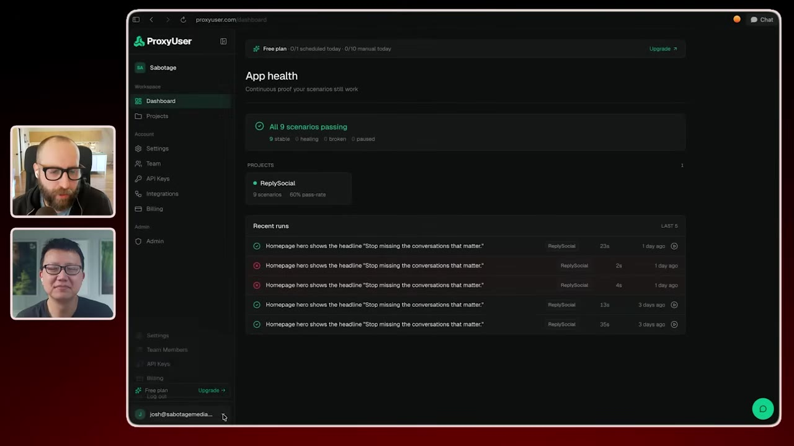
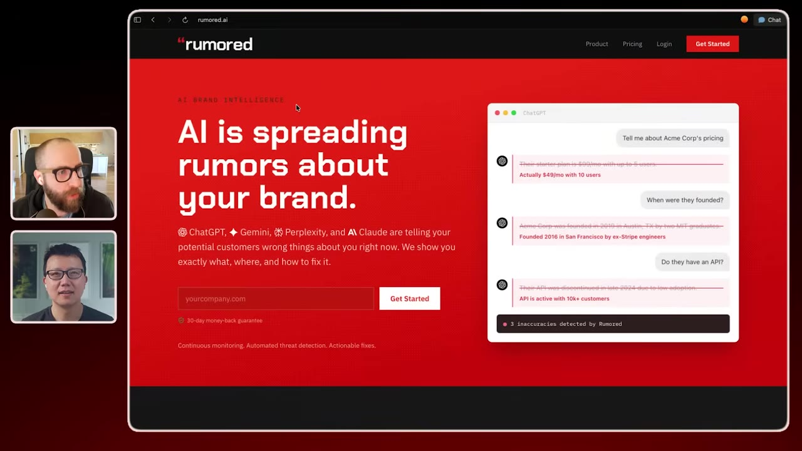
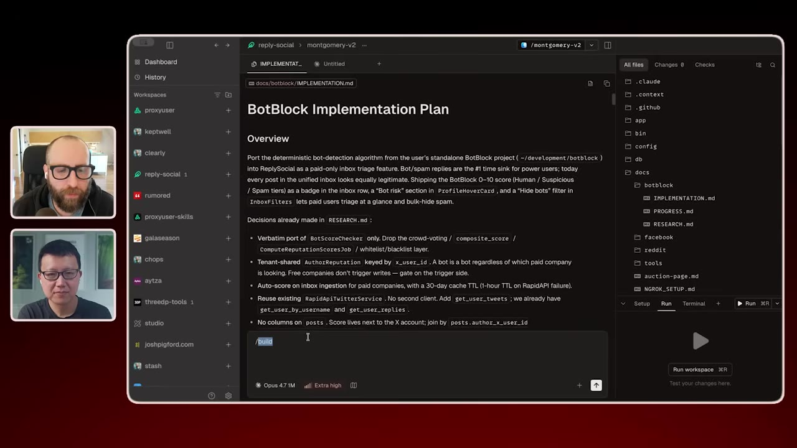
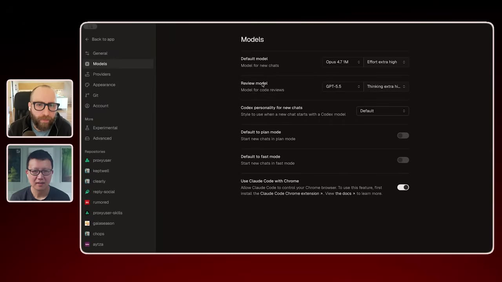
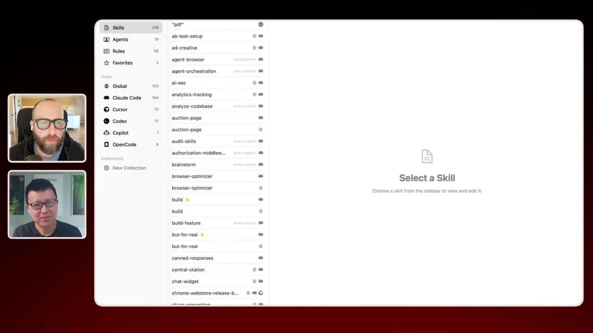
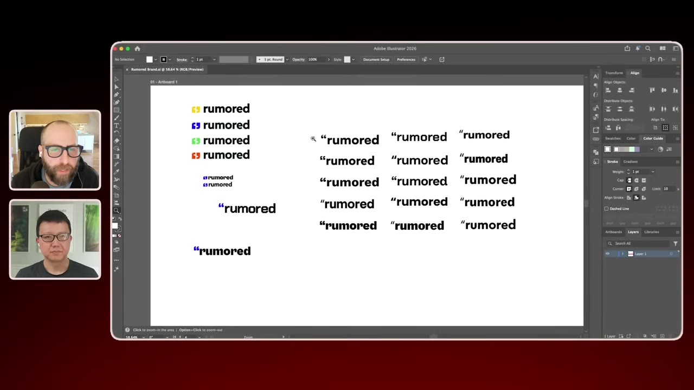

Peter chats with Josh Spigford — serial founder who sold Baremetrics for $4M and now builds five AI products simultaneously — about his research-to-PR workflow, adversarial AI review, and why he launches most things within 24 hours.
Watch on YouTube
It's terrifying launching something. I've been doing it for 25 years, launched hundreds of different products, and like every single time it's just like, "God, what if zero people care?"— Josh Spigford
Peter introduces Josh Spigford — sold Baremetrics for $4M, now building at least five AI products in parallel. Josh opens with what sounds like a confession: even after decades of shipping, the moment of launch still hits hard.
The product lineup he's currently working on:
Josh is going to show us exactly how he builds with AI as a solo founder.— Peter

I'm desperate to constantly learn new things and I find myself limited if I have to sort of focus on one thing. Now, is that the best business move? I don't know. There's an argument that no, it's a terrible idea. But from a defining success perspective, I find much more fulfillment in having my hand in a lot of different things.— Josh Spigford
Josh describes his ADHD not as a bug but as infrastructure — his brain naturally ping-pongs between interests. The difference now is he has AI tools to feed each creative thread in parallel. After seven years on Baremetrics (a single product), the idea of focusing on one thing again felt suffocating.
There's been stuff where I've launched within 24 hours, or even same day. The idea of spending months working on something before you put it out for other people to use, I think that's a real bad idea.— Josh Spigford

What the build skill does is it has research, planning, and implementation phases. Each phase has different instructions. The output of the research phase is a document — it takes your previous codebase, merges it with the new one, and does high-level research: different API calls you'd need, pros and cons, what can be ignored, what needs to come over.— Josh Spigford
Josh's build process follows a strict three-stage pipeline:
I've told it to make phases that are user-testable. Sometimes implementation docs have 30-plus different phases because I want to be able to personally test each step. At the end of the day, I need to feel like it's right or notice when something loads slow or doesn't work as pictured.— Josh Spigford

I use Opus for the bulk of everything. It does all the planning, the first pass on everything. Then after it's built out the code in that work tree, I do a review pass using GPT 5.5. It does a sort of adversarial review and invariably finds three to five bugs that Opus overlooked.— Josh Spigford
The review loop is Josh's quality gate — and it relies on having different models play opposing roles:
The But for Real skill is basically like kind of bullies the AI, the LLM, into like, 'You almost certainly screwed some stuff up. Go back over it again.' It'll find three to five bugs.— Josh Spigford


Josh's workflow extends beyond code:
.claude rules so the same mistakes aren't repeatedI haven't found a great way to shortcut the logo design part. The pen tool, going through a thousand different fonts — that's still something I do by hand. But for marketing pages, I build the app first, then generate the marketing site from the actual feature set.— Josh Spigford
The AI has leveled the playing field. At the same time, I've got 25 years of boots-on-the-ground experience building things pre-AI. I know the general shape of how things should work, so I can quickly get to a shippable point and decide if this will hold up or become a real problem in a couple months.— Josh Spigford
You'll build something based on your own assumption of what the problem is. Maybe it solves the problem exactly for you, but what the problem is for somebody else is similar but looks a little different, and you can't know what that is until somebody else is in there. So you just need to get those other perspectives as fast as possible.— Josh Spigford
Josh's core principle: ship fast, get users, learn from their actual use cases. Email capture lists and landing pages are "distractions" — they let you feel busy while avoiding the real work of shipping.
Anything with server costs needs to cover them; if nobody pays, you kill it
Highest support overhead per customer — learned this the hard way
60K Twitter followers give new products an initial boost
@shpigford on Twitter; everydayisayear.ai for his blog
What if zero people care? That sucks. As humans we tend to delay that stuff by having a landing page where we collect email addresses and try to translate that into demand. It's just not. So I just suck it up, build the thing, and shove it out there and see what happens.— Josh Spigford